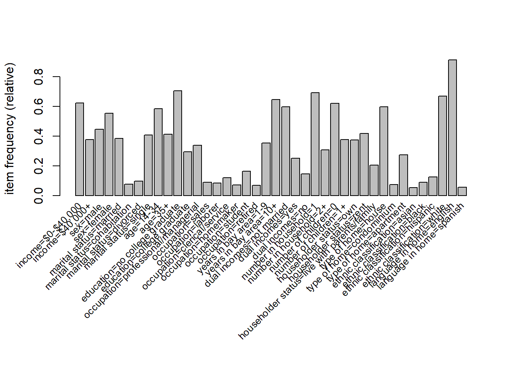
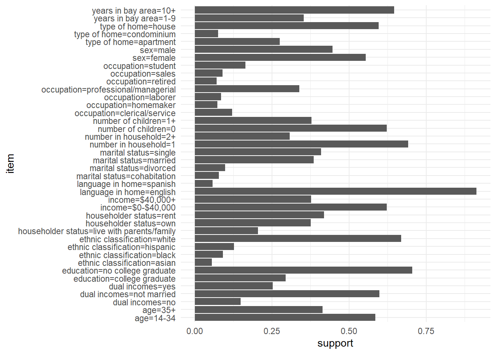

Chapter 8 Association rule mining
While \(K\)-means clustering is used primarily for numerical measures, we often have data where the variables are categorical. A common database type that we haven’t yet met comes in the form of a list of sets of items. A classical example is that of market basket analysis. A retail store has a large number of transactions during a particular time period, and is interested whether certain groups of items are consistently purchased together. With knowledge of such associations the store layout could be designed to place items optimally with respect to each other, or the data might be used for cross-selling (discounting an item if you purchase the second), catalogue design, or to identify customer segments based on purchasing patterns.
A number of other examples are similar to this, however. Results from questionnaires (particularly when the questions permit categorical answers) yield similar data, and the analyst may be interested in associations between the answers to different questions. Data from web searches may also be analysed in the same manner. People that search for certain terms may be more likely to also search for other terms. Further, there’s the possibility that improved search results65 might be gleaned: If a person has previously searched for ‘Apple’ and later searches for ‘Leopard’ then it may be that they are interested in Mac OS 10.5 (codenamed ‘Leopard’) rather than whether leopards eat apples.
Typically, such datasets consist of a large number of possible items and a large number of collections of those items, where each collection may contain only a small fraction of the total items available. A supermarket for example may have many thousands of products, yet each transaction may consist of at most a few hundred items, and in many cases fewer than ten items. Table 8.1 shows a few entries from a typical transaction database.
How this chapter connects. Association rules are another unsupervised task from the comparison table in Section 1.4.1, but the focus is different from clustering. Here we study which items or conditions co-occur, rather than how to group the observations themselves. This makes the chapter a natural companion to Section 7.9.3 for categorical or transactional data.
| transaction | items |
|---|---|
| 1 | bread, milk |
| 2 | beer |
| 3 | butter |
| 4 | bread, butter, milk |
| 5 | bread, butter |
| 6 | bread, beer |
The retailer is primarily interested in whether a product is purchased (presence/absence) rather than how many instances of the same item were purchased in the same transaction, so the data may typically be represented by a binary matrix as in Table 8.2.
| transaction | bread | milk | beer | butter |
|---|---|---|---|---|
| 1 | 1 | 1 | 0 | 0 |
| 2 | 0 | 0 | 1 | 0 |
| 3 | 0 | 0 | 0 | 1 |
| 4 | 1 | 1 | 0 | 1 |
| 5 | 1 | 0 | 0 | 1 |
| 6 | 1 | 0 | 1 | 0 |
Association rules provide information about implications between item sets: if a transaction has items from set \(A\), do they also tend to have items from set \(B\)? This is an example of a rule which is an implication of the form \(A \Rightarrow B\), where \(A, B\) are itemsets with the requirement that they are disjoint (\(A \cap B = \emptyset\)). \(A\) is known as the antecedent (or lhs) and \(B\) is the consequent (or rhs) of the rule.
From Table 8.1, an example rule for the supermarket might be \(\{\textrm{milk},\textrm{bread}\} \Rightarrow \{\textrm{butter}\}\), meaning that if the customer purchases milk and bread, they also purchase butter. Even with this small dataset (just 4 items), there are 50 association rules. In general, for \(d\) items, the number of association rules is given by \[3^d - 2^{d+1} + 1,\] and thus is exponential in the number of items. The majority of these rules are of no use: It will be unlikely that there are transactions in the data set that contains the rules, thus we need to be able to select the interesting rules from all possible rules, without having to generate all possible rules to begin with.
The support \(\mathop{\mathrm{supp}}(A)\) of an itemset \(A\) is defined as the proportion of transactions in the database which contain the itemset. For the example database in Table 8.1, the itemset \(\{\textrm{milk},\textrm{bread}\}\) has a support of \(2/6\) since it occurs in 2 out of the 6 transactions, whereas the itemset \(\{\textrm{bread}\}\) has support \(5/6\). The support of a rule \(A \Rightarrow B\) is then just the support of \(A \cup B\), i.e. the proportion of transactions in the database containing all the items in the rule.
The confidence of a rule is defined as \[\mathop{\mathrm{conf}}(A \Rightarrow B) = \frac{\mathop{\mathrm{supp}}(A \cup B)}{\mathop{\mathrm{supp}}(A)},\] and can be interpreted as an estimate of the probability \(P(B|A)\), the probability of finding the consequent of the rule given the antecedent. From Table 8.1 we see that the rule \(\{\textrm{milk}, \textrm{bread}\} \Rightarrow \{\textrm{butter}\}\) has confidence \(\frac{1/6}{2/6} = 0.5\), so that 50% of the transactions containing milk and bread also contain butter.
Interesting association rules are those that satisfy both a minimum support clause and a minimum confidence constraint simultaneously. The minimal support constraint allows rules to be mined efficiently, as if an itemset \(B\) has high support, then we know that all subsets of \(B\) must also have high support. This allows algorithms to be designed that mine all maximal frequent itemsets efficiently.
Even with such constraints, however, there may still be a large number of association rules found. Further, one must be careful to consider association rules with high support and high confidence as being interesting, as example 8.1 shows.
Example 8.1 Coffee and tea drinking
Suppose that 1000 people were asked whether they drank tea or coffee, or both. The results of this are given in the contigency table 8.3.
| coffee | no coffee | total | |
|---|---|---|---|
| tea | 150 | 650 | 800 |
| no tea | 50 | 150 | 200 |
| total | 200 | 800 | 1000 |
The association rule \(\{\textrm{coffee}\}\Rightarrow\{\textrm{tea}\}\) may be considered, and we find it has relatively high support (15%) and confidence (75%). At first glance it might appear that those that drink coffee also tend to drink tea. However, the probability of a person drinking tea is 80% regardless of whether they drink coffee, and this reduces to 75% if they drink coffee. Thus, knowing that a particular person drinks coffee actually reduces the chance that they’re a tea drinker! The high confidence of the rule \(\{\textrm{coffee}\}\Rightarrow\{\textrm{tea}\}\) is therefore misleading. The pitfall of high confidence is due to the fact that the confidence measure does not take into account the support of the rule consequent. Once we take into account the support of tea drinkers, it is no surprise that many coffee drinkers also drink tea.
A popular measure useful for ranking association rules in terms of “interestingness" is lift, which is defined as \[\mathop{\mathrm{lift}}(A \Rightarrow B) = \frac{\mathop{\mathrm{supp}}(A \cup B)}{\mathop{\mathrm{supp}}(A)\mathop{\mathrm{supp}}(B)}.\] This may be interpreted as the deviation of the support of the rule from what might be expected if the antecedent and consequent were independent. A large lift value indicates a strong positive association. A lift of 1 indicates no association, and a lift smaller than one indicates a negative association. The lift of the rule \(\{\textrm{milk},\textrm{bread}\}\Rightarrow\{\textrm{butter}\}\) is \(1\). The lift of the rule \(\{\textrm{coffee}\}\Rightarrow\{\textrm{tea}\}\) is \(\frac{0.15}{(0.2)(0.8)} = 0.9375\), indicating a slight negative correlation.
Using the definition of confidence, lift may also be written as \[\mathop{\mathrm{lift}}(A \Rightarrow B) = \frac{\mathop{\mathrm{conf}}(A \Rightarrow B)}{\mathop{\mathrm{supp}}(B)} = \frac{P(B|A)}{P(B)}.\] Thus lift measures how much the knowledge that \(A\) has occurred changes the probability of observing \(B\), relative to the baseline probability of \(B\). In that sense it behaves like a likelihood ratio: lift above 1 indicates positive association, lift equal to 1 corresponds to independence, and lift below 1 indicates negative association.
While the former statistical criteria for interesting-ness of association rules is important, often subjective measures may be of more interest to the data-miner. An association might be considered uninteresting if it provides only information that was already known (or suspected). The associations that provide connections that were not previously known are those that are subjectively of interest. For example, the association \(\{\textrm{bread}\}\Rightarrow\{\textrm{butter}\}\) is not subjectively interesting, whereas \(\{\textrm{nappies}\}\Rightarrow\{\textrm{beer}\}\) is interesting!
There have been several algorithms developed for mining association
rules, with the Apriori and Eclat algorithms being two of the more
popular techniques. The R package arules implements both algorithms.
8.1 Transaction data as a binary matrix
Suppose that the database contains \(N\) transactions and that there are \(d\) distinct possible items. Let \[z_{ir} = {\bf 1}[\mbox{transaction $i$ contains item $r$}], \qquad i = 1,\ldots,N,\; r = 1,\ldots,d.\] Then the transaction database may be represented as an \(N \times d\) binary matrix \(Z = (z_{ir})\). If \(A\) is an itemset, then transaction \(i\) contains \(A\) precisely when \(z_{ir}=1\) for every item \(r \in A\). Thus the support of \(A\) may be written as \[\mathop{\mathrm{supp}}(A) = \frac{1}{N}\sum_{i=1}^N {\bf 1}[A \subseteq T_i] = \frac{1}{N}\sum_{i=1}^N \prod_{r \in A} z_{ir},\] where \(T_i\) denotes the set of items in transaction \(i\).
This binary representation is conceptually useful even when the data are stored in a sparse format, since it makes clear that association rule mining is fundamentally about the co-occurrence structure of the items.
8.2 The Apriori principle
The support measure satisfies an antimonotonicity property: if \(A \subseteq B\), then every transaction containing \(B\) must also contain \(A\), and hence \[\mathop{\mathrm{supp}}(B) \leq \mathop{\mathrm{supp}}(A).\] This is known as the Apriori principle. It is the key fact that makes large-scale rule mining possible. If an itemset fails the minimum support threshold, then all supersets of that itemset must also fail, and they may be discarded without ever having their support counted.
This principle applies only to support, not to confidence or lift. In practice one therefore first mines the frequent itemsets using a support threshold, and only afterwards generates the rules and filters them by confidence, lift or other measures of interest.
8.3 The Apriori algorithm
The Apriori algorithm works level-by-level through the itemset lattice.
Count the support of all 1-itemsets and retain those exceeding the minimum support threshold.
Generate candidate 2-itemsets from the surviving 1-itemsets, count their support, and discard those that are infrequent.
Generate candidate 3-itemsets from the surviving 2-itemsets, again pruning any candidate whose subsets are not all frequent.
Continue until no new frequent itemsets remain.
For each frequent itemset \(F\), generate rules \(A \Rightarrow F \setminus A\) for non-empty proper subsets \(A\) of \(F\), and retain those meeting the confidence requirement.
Although this is still a combinatorial problem, the support-based pruning means that the overwhelming majority of impossible or uninteresting candidates are never counted.
8.4 Apriori and Eclat
Apriori uses a horizontal representation of the data: the algorithm repeatedly scans through the transactions and counts how many contain each candidate itemset. Eclat instead uses a vertical representation. For each item \(r\), we store the transaction identifiers \[I_r = \{i : z_{ir} = 1\}.\] The support of an itemset may then be obtained by set intersection. For example, \[\mathop{\mathrm{supp}}(\{r,s,t\}) = \frac{|I_r \cap I_s \cap I_t|}{N}.\] Eclat is often faster in practice because intersections of transaction identifier sets can be cheaper than repeated scans through the full database.
8.5 Inspecting and filtering rules in arules
Once rules have been mined, the main task is usually to sort and filter
them. The arules package returns an object of class rules, which may
be inspected using
rules |> inspect()
rules |> sort(by = "lift") |> head(n = 10) |> inspect()
rules |> subset(lhs %in% "garlic")
rules |> subset(lhs %ain% c("garlic", "onion"))
rules |> subset(lhs %pin% "wine")The %in% operator matches complete item names, %ain% requires all
specified items to be present, and %pin% performs a partial match. In
practice these tools are often more useful than the original mining
step, because even moderate support thresholds can still produce a large
number of candidate rules.
Example 8.2 Household incomes and demographic information
A total of \(N=9409\) questionnaires containg 502 questions were filled out by shopping mall customers in the San Francisco Bay area. The dataset consists of 14 demographic attributes, one of which is annual household income.
We start by loading the data in and checking the frequency of items in the dataset with support greater than 5%, given in Figure 8.1.

Figure 8.1: The freqency of items in the Income data set with support greater than 5%
We can re-do this plot using ggplot instead which will make it a little nicer. We first use enframe() to convert the named vector returned by itemFrequency() to a tibble:
Income |>
itemFrequency() |>
enframe(name="item", value="support") |>
filter(support >= 0.05) |>
ggplot() +
geom_col(mapping = aes(x=support, y=item))
There are several other variables with support less than 5% - all
variables can be seen using labels(Income)$items. The next step is to
generate association rules using the apriori function. We specify a
support of 0.01 and confidence of 0.6, yielding just over a million
rules.
#> Apriori
#>
#> Parameter specification:
#> confidence minval smax arem aval originalSupport maxtime support minlen
#> 0.6 0.1 1 none FALSE TRUE 5 0.01 1
#> maxlen target ext
#> 10 rules TRUE
#>
#> Algorithmic control:
#> filter tree heap memopt load sort verbose
#> 0.1 TRUE TRUE FALSE TRUE 2 TRUE
#>
#> Absolute minimum support count: 68
#>
#> set item appearances ...[0 item(s)] done [0.00s].
#> set transactions ...[50 item(s), 6876 transaction(s)] done [0.00s].
#> sorting and recoding items ... [49 item(s)] done [0.00s].
#> creating transaction tree ... done [0.00s].
#> checking subsets of size 1 2 3 4 5 6 7 8 9 10#> Warning in apriori(Income, parameter = list(support = 0.01, confidence = 0.6)):
#> Mining stopped (maxlen reached). Only patterns up to a length of 10 returned!#> done [0.42s].
#> writing ... [1200801 rule(s)] done [0.13s].
#> creating S4 object ... done [0.70s].#> set of 1200801 rules#> set of 1200801 rules
#>
#> rule length distribution (lhs + rhs):sizes
#> 1 2 3 4 5 6 7 8 9 10
#> 7 382 5447 34793 119273 245153 315139 265573 153451 61583
#>
#> Min. 1st Qu. Median Mean 3rd Qu. Max.
#> 1.000 6.000 7.000 7.121 8.000 10.000
#>
#> summary of quality measures:
#> support confidence coverage lift
#> Min. :0.01003 Min. :0.6000 Min. :0.01003 Min. : 0.6573
#> 1st Qu.:0.01265 1st Qu.:0.7238 1st Qu.:0.01556 1st Qu.: 1.1386
#> Median :0.01745 Median :0.8333 Median :0.02152 Median : 1.3910
#> Mean :0.02476 Mean :0.8272 Mean :0.03076 Mean : 1.6330
#> 3rd Qu.:0.02792 3rd Qu.:0.9423 3rd Qu.:0.03476 3rd Qu.: 1.9247
#> Max. :0.91289 Max. :1.0000 Max. :1.00000 Max. :24.3140
#> count
#> Min. : 69.0
#> 1st Qu.: 87.0
#> Median : 120.0
#> Mean : 170.2
#> 3rd Qu.: 192.0
#> Max. :6277.0
#>
#> mining info:
#> data ntransactions support confidence
#> Income 6876 0.01 0.6
#> call
#> apriori(data = Income, parameter = list(support = 0.01, confidence = 0.6))The rules may be inspected via the inspect command. Sorting the rules
first based on confidence or lift is useful to obtain the most
interesting (objectively!) relationships first:
#> lhs rhs support confidence coverage lift count
#> [1] {marital status=widowed} => {dual incomes=not married} 0.02937755 1 0.02937755 1.671366 202
#> [2] {marital status=divorced} => {dual incomes=not married} 0.09787667 1 0.09787667 1.671366 673
#> [3] {marital status=single} => {dual incomes=not married} 0.40910413 1 0.40910413 1.671366 2813
#> [4] {occupation=military,
#> ethnic classification=white} => {language in home=english} 0.01207097 1 0.01207097 1.095428 83
#> [5] {marital status=single,
#> ethnic classification=other} => {dual incomes=not married} 0.01163467 1 0.01163467 1.671366 80As you can see, there are rules with confidence=1, indicating that all
transactions in the datasets containing the lhs also contain the rhs.
The items dual income=not married and marital status=single are
clearly giving the same information. We can filter out all such rules
using the subset command66:
#> lhs rhs support confidence coverage lift count
#> [1] {marital status=single,
#> occupation=student,
#> householder status=live with parents/family} => {age=14-34} 0.1137289 0.9987229 0.1138743 1.706141 782
#> [2] {marital status=single,
#> occupation=student,
#> dual incomes=not married,
#> householder status=live with parents/family} => {age=14-34} 0.1137289 0.9987229 0.1138743 1.706141 782These are a little more interesting, but hardly surprising - if you’re a student living with your parents/family, then you’re very likely to be less than 35 years of age.
We can also inspect things interactively via the inspectDT function in arulesViz, though you’ll want to make sure you don’t have too many rules first:
The subset() command is useful for filtering things down somewhat. We can
use the %in%, %ain%, and %pin% operators to filter what appears on
the lhs or rhs of the rules. The %in% operator matches any of the
following complete strings, the %ain% operator matches all of the
strings, and %pin% partially matches any of the following strings. Let
us start by finding rules that associate with high income, with moderate
lift.
high_income <- rules |>
subset(rhs %in% "income=$40,000+" & lift > 1.2)
high_income |>
sort(by="confidence") |>
head(n=3) |>
inspect()#> lhs rhs support confidence coverage lift count
#> [1] {education=college graduate,
#> years in bay area=1-9,
#> dual incomes=yes,
#> number of children=0,
#> householder status=own,
#> language in home=english} => {income=$40,000+} 0.01308901 0.9782609 0.01337987 2.591110 90
#> [2] {sex=male,
#> age=35+,
#> education=college graduate,
#> occupation=professional/managerial,
#> dual incomes=yes,
#> number of children=0,
#> householder status=own} => {income=$40,000+} 0.01265271 0.9775281 0.01294357 2.589169 87
#> [3] {marital status=married,
#> education=college graduate,
#> years in bay area=1-9,
#> dual incomes=yes,
#> number of children=0,
#> householder status=own,
#> language in home=english} => {income=$40,000+} 0.01265271 0.9775281 0.01294357 2.589169 87This suggests that a college graduate in a household with two incomes that own their home is likely to have a high household income, as one would expect. A little more interesting is the association with no children. Let us look at a different measure of wealth, home ownership. Obviously home ownership will be associated with high household income, but what about home ownership by those that aren’t earning a high annual income?
home_own <- rules |>
subset(lhs %in% "income=$0-$40,000" &
rhs %in% "householder status=own" &
lift > 1.2)
home_own |>
sort(by="confidence") |>
head(n=2) |>
inspect()#> lhs rhs support confidence coverage lift count
#> [1] {income=$0-$40,000,
#> sex=female,
#> marital status=married,
#> age=35+,
#> dual incomes=no,
#> number of children=0,
#> type of home=house,
#> ethnic classification=white} => {householder status=own} 0.01163467 0.9756098 0.01192554 2.596088 80
#> [2] {income=$0-$40,000,
#> sex=female,
#> marital status=married,
#> age=35+,
#> dual incomes=no,
#> number of children=0,
#> type of home=house,
#> ethnic classification=white,
#> language in home=english} => {householder status=own} 0.01163467 0.9756098 0.01192554 2.596088 80The recurring theme in these rules are older people in a single-income household with no children. Finally, we look at one of the variables not present in Figure 8.1, i.e. one of those variables that is rare in the dataset: whether the person had answered the question regarding how long they’d resided in the San Francisco bay area.
new_to_bay <- rules |>
subset(rhs %in% "years in bay area=1-9" &
lift > 1.2)
new_to_bay |>
sort(by="lift") |>
head(n=5) |>
inspect()#> lhs rhs support confidence coverage lift count
#> [1] {education=no college graduate,
#> occupation=military,
#> number in household=1} => {years in bay area=1-9} 0.01032577 0.8452381 0.01221640 2.391711 71
#> [2] {occupation=military,
#> householder status=rent,
#> language in home=english} => {years in bay area=1-9} 0.01018034 0.8139535 0.01250727 2.303187 70
#> [3] {occupation=military,
#> householder status=rent} => {years in bay area=1-9} 0.01105294 0.8000000 0.01381617 2.263704 76
#> [4] {income=$0-$40,000,
#> sex=male,
#> occupation=military} => {years in bay area=1-9} 0.01003490 0.7931034 0.01265271 2.244189 69
#> [5] {income=$0-$40,000,
#> age=14-34,
#> occupation=military} => {years in bay area=1-9} 0.01003490 0.7931034 0.01265271 2.244189 69With small numbers, one shouldn’t read too much into this, but it is interesting that the military occupation comes up in the top 5 association rules.
Example 8.3 Recipe ingredients and recommendation-style rules
The lecture used a TidyTuesday dataset of recipes grouped by cuisine.
Each recipe may be treated as a transaction and each ingredient as an
item. After some string cleaning of the ingredients variable, the data
may be converted to a transactions object and mined in exactly the
same way as any supermarket basket dataset:
library(arules)
library(tidyverse)
cuisines_raw <- read_csv(
"https://raw.githubusercontent.com/rfordatascience/tidytuesday/main/data/2025/2025-09-16/cuisines.csv",
show_col_types = FALSE
)
recipe_trans <- cuisines_raw |>
... # clean ingredients, keep one ingredient per row
as("transactions")
recipe_rules <- recipe_trans |>
apriori(parameter = list(support = 0.05, confidence = 0.4,
minlen = 2, maxlen = 4))
recipe_rules |>
subset(lhs %in% "garlic" & lift > 1.1) |>
sort(by = "lift") |>
head(n = 10) |>
inspect()The same interpretive issues arise as before. Ingredients that appear in many cuisines may lead to high-confidence but uninteresting rules, whereas large lift values tend to indicate more distinctive cuisine or technique pairings. This is very close in spirit to the recommender system statement “users who selected \(A\) also selected \(B\)”.
8.6 Where association rules fit
Association rule mining sits naturally beside several other topics in data mining and statistics.
Confidence is simply an estimate of the conditional probability \(P(B|A)\).
Lift compares \(P(B|A)\) with the marginal probability \(P(B)\), so it acts as a measure of departure from independence.
Unlike clustering, which groups observations, association rule mining studies co-occurrence patterns among the variables or items.
Unlike classification, there is no designated target variable and no claim of causation. The rules are descriptive rather than predictive in the usual supervised-learning sense.
In recommender systems, market basket analysis provides the basic intuition behind statements such as “customers who bought \(A\) also bought \(B\)”.
8.7 Summary
Association rule mining is designed for sparse transactional or categorical data where co-occurrence is the main object of interest.
Support controls how common an itemset is, confidence estimates a conditional probability, and lift compares that probability with a baseline of independence.
The Apriori principle makes the search over large itemsets feasible, while filtering and visualisation help us focus on rules that are both strong and interesting.
Association rules are descriptive rather than causal. Their value is usually in summarising behaviour, supporting recommendation, or surfacing patterns worth following up.
Looking ahead, Section 9 returns to supervised learning and shows how multiple models can be combined to improve prediction and classification performance.